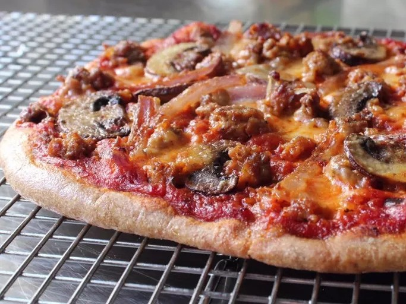

Home
Spelt Pizza Dough

Description
Spelt pizza dough is made with an ancient grain that is similar to wheat. Sources online say that it is higher in protein than regular pizza dough. It is also known to be easier to digest. You can top this dish with all of your traditioinal favorite pizza toppings.
Ingredients
- 3 cups sprouted spelt flour, or as needed, divided
- 1 cup warm water (100 to 105 degrees F/38 to 41 degrees C)
- 2 teaspoons honey
- 1 (.25 ounce) package active dry yeast
- 1 tablespoon extra-virgin olive oil, plus more for oiling the bowl
- 1 teaspoon kosher salt